Process & Methodology
Process
During the project I followed a three step process that helped me guide the evaluation of the Sill’s web experience from a user’s point of view.
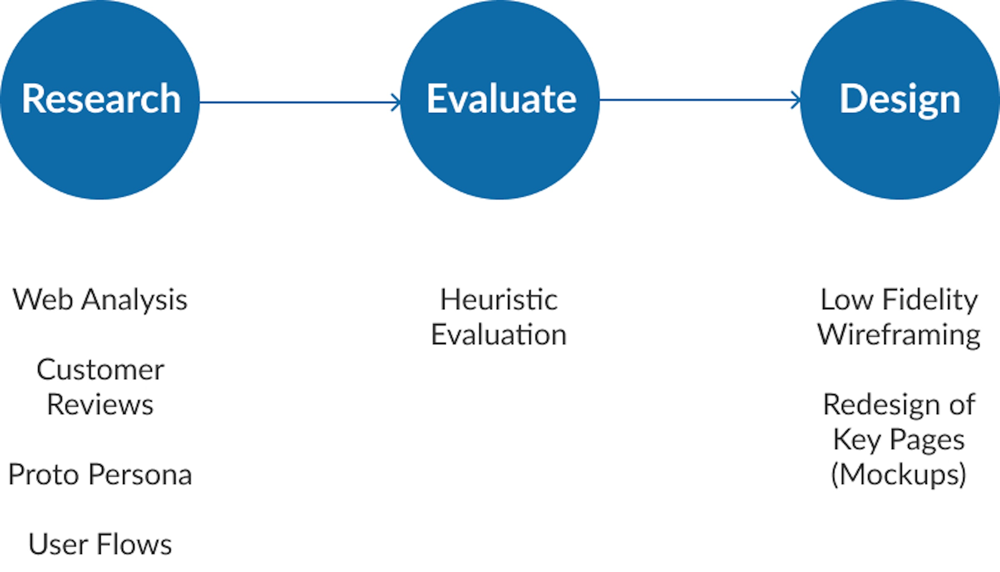
Methodology
For the evaluation I decided to use the 10 usability heuristics for user interface design by Jakob Nielsen because the are most commonly used and serve as a standard designers adhere to in order to find usability issues in web and mobile interfaces.
Research
Web analysis
To kick off the project, I began with a research phase to gain an understanding of the common user challenges and issues on the site. This involved conducting a quick web analysis of the platform and reviewing customer reviews online.
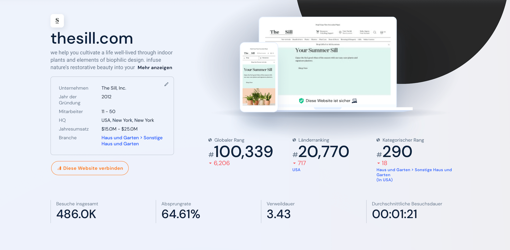
Customer Reviews
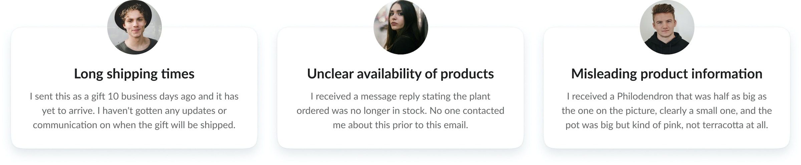
Key Findings
- The web analysis revealed that The Sill had a high bounce rate of 64.6% at the time of analysis, and web traffic had decreased significantly by 5% between March and April 2022.
- Customers mostly complained about long and intransparent shipping times, which made it difficult to plan ahead when buying gifts.
- Missing information about availability of products leads to uncertainty and frustrations when making purchases.
- It's also difficult for users to judge the size and quality of plants based on product images alone.
Proto-Persona
Next, I used the results of the customer reviews to create proto-personas to empathize with user needs and pain points. The personas also helped me to guide the evaluation from a user's point of view.
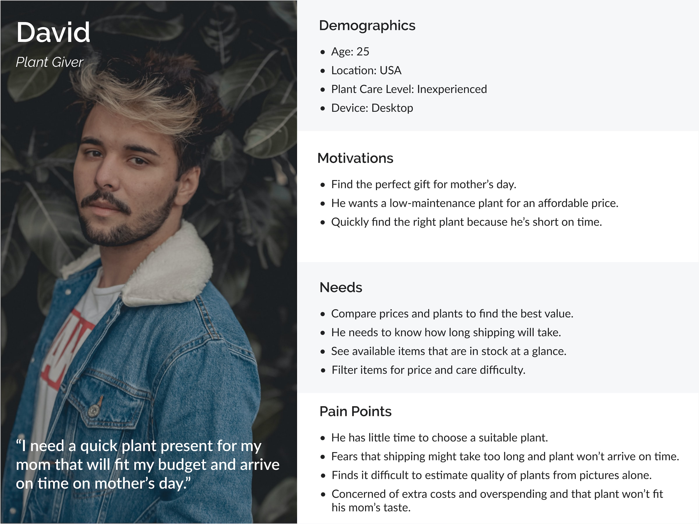
User flows
I then used the proto-personas to outline key flows that Sarah and David would have to go through to accomplish their goals on The Sill. The user flows served as a starting point for identifying key pages I wanted to focus on when evaluating the interface.
- As a new user, David will use the web shop to find an affordable, easy-care plant for Mother's Day that fits his budget and arrives on time.
- As an existing user, Sarah needs to customize and purchase a medium sized low-light plant to add to her growing collection.
User flow: Find an easy-care plant for mother's day
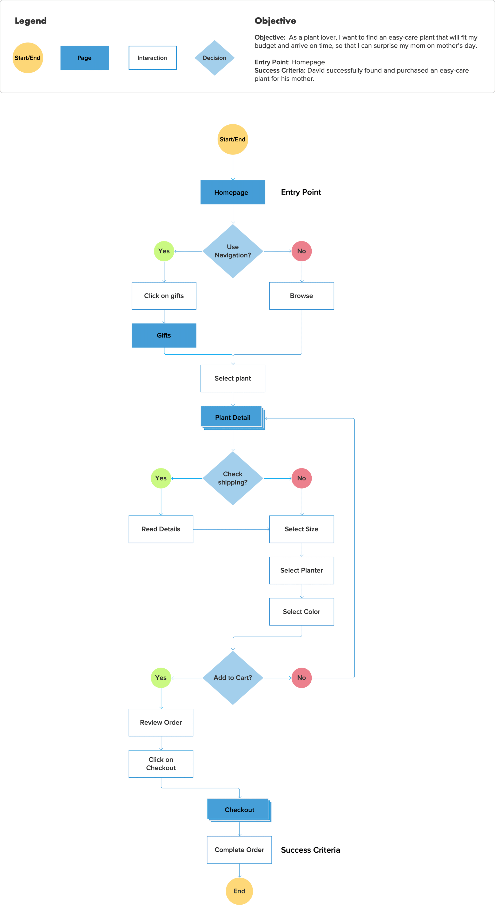
Heuristic Evaluation
Based on the user flows, I conducted a two-step heuristic evaluation, focusing on the key pages required for users to complete their tasks.
First, I carried out a cognitive walkthrough to analyse the web shop experience in terms of user needs.
Secondly, I evaluated the key pages using Jakob Nielsen's 10 usability heuristics, identifying any usability problems and rating their severity, before making recommendations for improvement.
Navigation
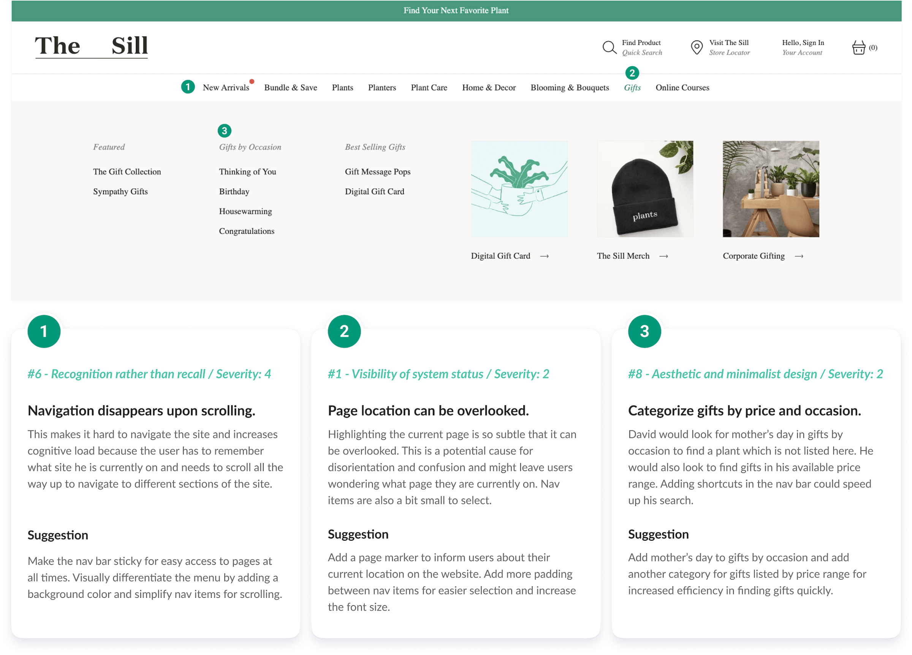
Products
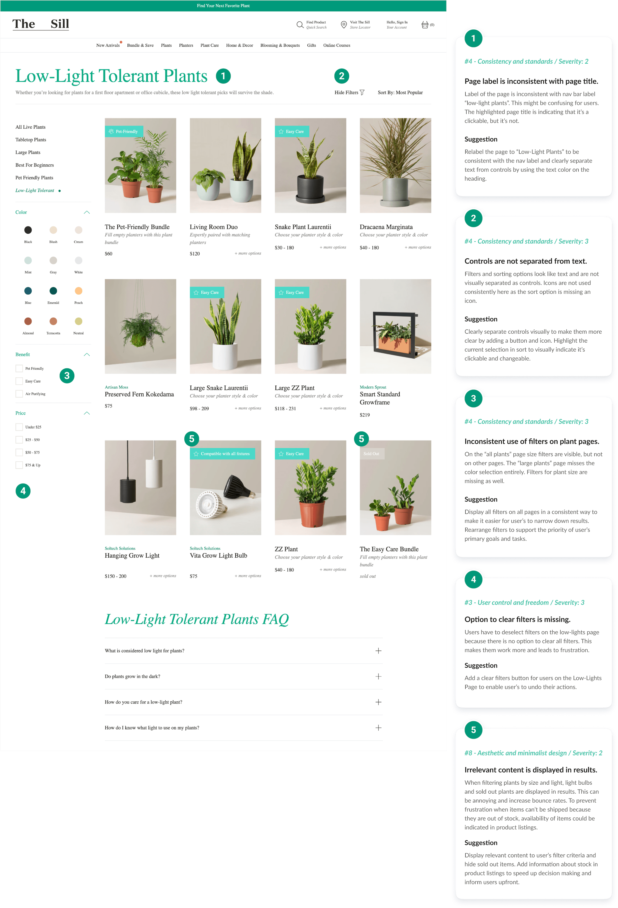
Cart
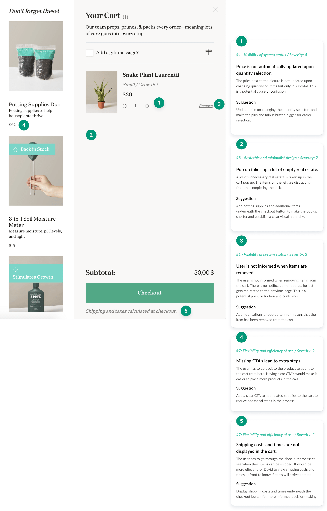
Design
Exploring possible solutions
Using the user flows and proto-personas, I started by creating low-fidelity wireframes on paper to find solutions to different usability issues. I then turned them into high-fidelity wireframes in Figma to redesign the navigation, the low-lights page, the product details page and the cart.
Product Page
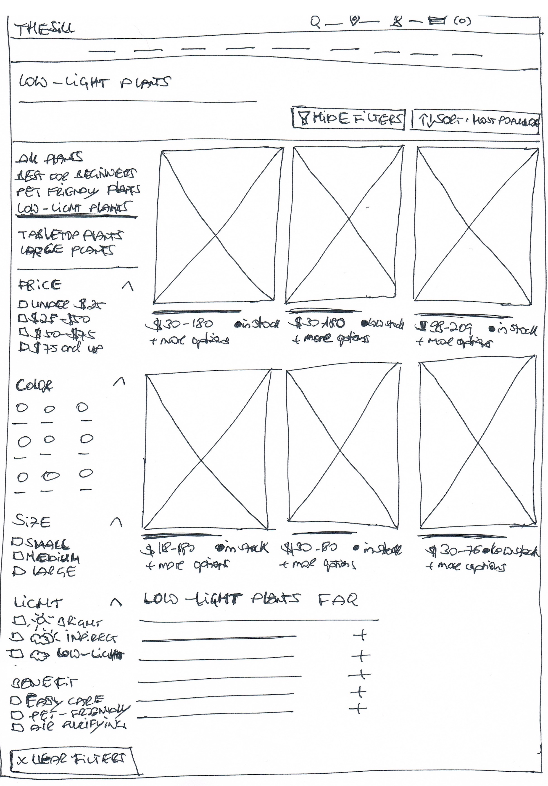
Navigation
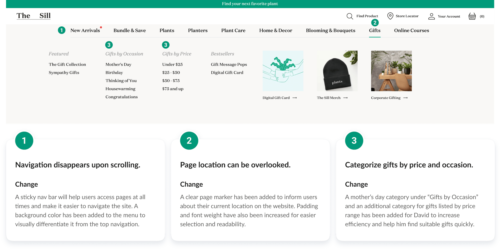
Products
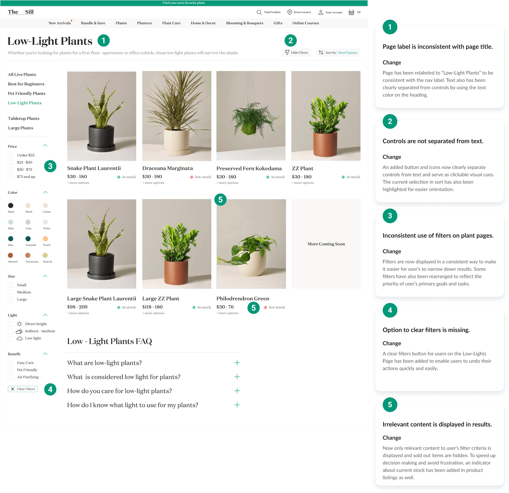
Cart
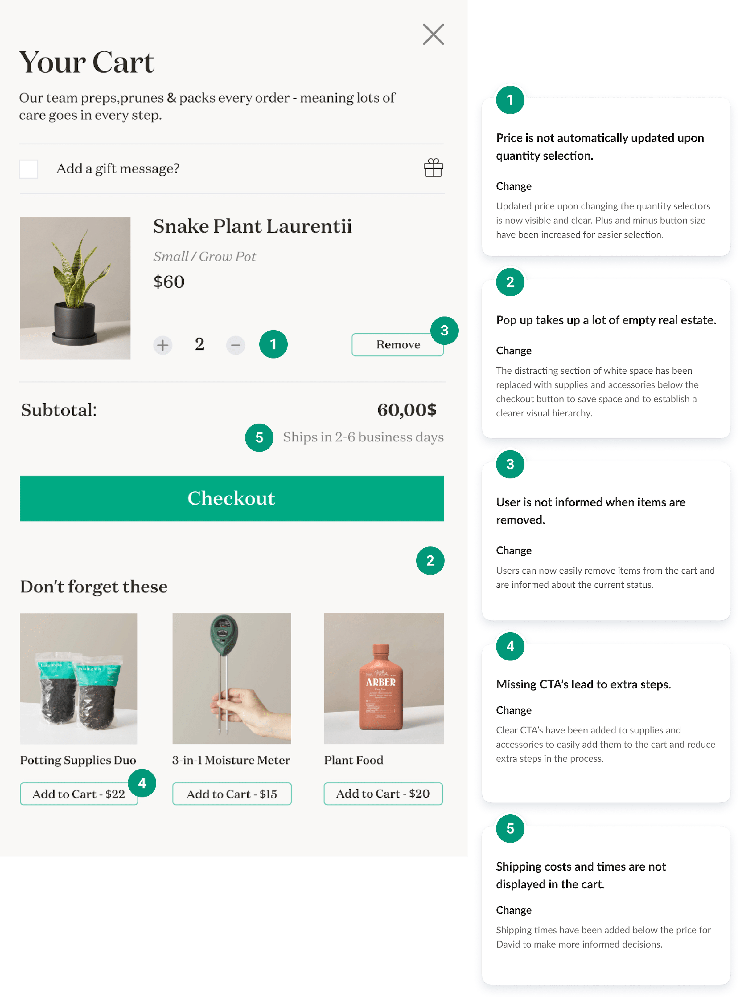
Next Steps
The heuristic evaluation of The Sill has been a valuable learning experience. It provided an objective assessment of The Sill’s usability and helped me to identify potential improvements to boost engagement.
Next steps involve conducting user usability tests to evaluate the effectiveness of the proposed solutions.